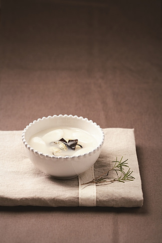

굴떡국
입맛을 잃은 환자에게는 일품요리를 권하는 것도 방법이다. 한 가지 음식으로 식사를 해결할 수 있어 식사에 대한 부담을 덜 수 있기 때문. 따끈한 국물 맛이 일품인 떡국은 그런 면에서 권할만한 음식이다. 보통 쇠고기로 국물을 내는데 쇠고기 대신 굴을 이용하면 굴에 많이 함유된 아연 등의 미량 영양소를 섭취할 수 있으며, 간을 세게 하지 않아도 시원한 해산물의 향으로 식욕을 돋울 수 있는 별미가 된다.
재료
굴 400g, 떡국떡 2컵, 물 4컵, 사방 10cm 다시마 1장, 국물용 멸치 15개, 다진 마늘 1작은술, 국간장 2큰술, 새우젓 국물 약간>
만드는 법